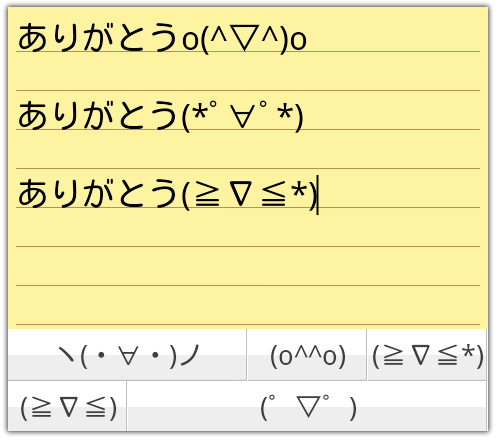

Simeji 付费账本：日语输入法里的可爱税，值不值？
从免费版到 Pro 会员，拆解 Simeji 的定价逻辑，帮你算清楚——为一只会变贴纸的键盘花这钱，到底是刚需还是冲动消费。
它到底值不值得掏钱？
这是我用 Simeji 第三个月以来最纠结的一个问题。作为一个每天都要打日语的人，从最初偶然看到了它的官网，到后来被朋友推荐它的贴纸变换功能，再到某天弹窗提示「升级 Pro 解锁全部效果」——我跟大多数人一样，在「免费够用」和「付费真香」之间摇摆了好一阵。今天把这本账摊开算一算。
定价拆解：免费版给什么，Pro 多什么
先把 Simeji 的功能边界理清楚。免费版能干什么？基础日语输入、颜文字面板、皮肤收藏、单手模式，这些日常用的东西它全都有。甚至连那个让它在 Z 世代里出名的「贴纸超变换」，免费用户也能用——只是效果池里有一部分被锁上了，而且生成的图片会带 Simeji 的水印。

Pro 会员解锁的核心权益集中在三个地方：贴纸效果全开、AI 画伯生成背景图、以及一些高级皮肤素材。简单说，免费版给你一把能打的基础武器，Pro 版是把这套武器升级成带特效的豪华套装。
价格方面，日语输入法赛道里 Simeji 的定位不算贵。它走的是订阅制路线，按月或按年付费。对比同类竞品的买断制，订阅的好处是你可以随时停，坏处是长期用下来总成本会更高——这也是后面算账的关键变量。
三类人的账本
轻度用户：日语用得少，或者只是偶尔发两句
如果你想试试 Simeji 的话去下载安装一下，只是为了偶尔打个日语名、发一句简单的问候，那我的判断是——完全没必要付费。免费版的基础输入功能已经够用了，颜文字面板自带的热门表情也足够应付日常社交。单手模式这种应急功能免费版也给了，不会因为你没充钱就用不上核心体验。
这类用户的典型场景：学日语初级阶段、去日本旅游前装一下、或者纯粹觉得键盘皮肤可爱想换个样子。一个月打开键盘的次数不超过二十次，花订阅费等于把钱扔水里。
每单位时间成本：几乎为零，因为你用不上 Pro 的任何东西。
主力用户：每天都要打日语，贴纸功能是刚需
这是最纠结的一类。假设你在日本上学、做对日工作、或者就是个重度二次元，每天在 LINE、Twitter、Discord 里用日语聊好几个小时，那 Pro 的价值就开始显现了。
贴纸变换这个东西，免费版能用但效果有限。Pro 解锁的装饰模板、角色嵌入、节日限定效果，在实际聊天中的使用率比你想象的高。特别是新年、情人节、夏日祭这种节点，节日限定的贴纸能让你的消息在一堆文字里跳出来——日本社交文化里，「会发可爱贴纸」本身就是一种社交能力。
AI 画伯生成背景图也是主力用户的高频需求。免费版只能从预设里选，Pro 版你可以描述一句话让 AI 帮你画一个独一无二的皮肤背景——这在朋友之间很容易被注意到，属于「别人没有我有」的差异化体验。
那这钱花得值不值？我帮你算时间账。假设你每天用 Simeji 打字两小时，Pro 会员每月费用平摊到每天大约几块钱——换来的是更丰富的表达效果和不用手动找素材的便利。折算下来每小时几分钱，如果你觉得「省下来的找图时间 + 发出去的消息更受欢迎」值这个价，那就付。
每单位时间成本：按月订阅，每天几块钱，每小时几分钱。
重度用户：内容创作者 / 社交重度依赖 / 皮肤收藏控
这类人闭眼付，不用犹豫。
如果你的工作或者社交形象需要大量定制化的日语表达——比如做日语内容创作、运营日本社交媒体账号、或者就是个热衷于收集可爱键盘皮肤的重度爱好者——Pro 会员的每一项功能都能用上，而且用得频繁。
自定义皮肤编辑器本身免费版就能用，但 Pro 解锁的高级素材和 AI 画伯能让你的皮肤真正与众不同。颜文字排行榜免费版也能看，但具体的榜单数据和历史趋势可以在Simeji文档里查到——如果你在做 Z 世代相关的内容，用 Pro 解锁的完整榜单数据可以更精准地把握流行趋势。
还有一个细节：重度用户会发现 Simeji 的 Pro 会员有一个隐藏价值——去水印。免费版生成的贴纸带水印，在正式一点的场合或者需要二次转发的场景里会显得不专业。Pro 去掉水印之后，这些贴纸素材你可以自由使用，甚至可以用到自己的内容创作里。
每单位时间成本：几乎可以忽略。因为你用 Pro 节省的时间和获得的表达增益，远超过订阅费本身。
不付钱的替代方案
当然，不只有付费一条路。我整理了几个能省钱的替代选项，但每个都有代价。
换免费日语输入法。Gboard 自带日语输入，完全免费，基础功能够用。但它没有 Simeji 那些花里胡哨的贴纸和皮肤，颜文字库也弱很多。代价是「可爱」这条线直接放弃，回到实用主义的老路。
贴纸功能改用其他工具。市面上有专门的贴纸制作 App，你可以在那边做好图再存到手机里，用的时候从相册发。代价是操作多两步，聊天节奏被打断——本来一键变换的事变成了「打开另一个 App → 制作 → 保存 → 切回来发」。
降低使用频率。不是每天都要发那种带贴纸的消息，只有重要场合才用。代价是体验打折，而且你永远不知道下一次想发的时候免费版有没有你要的效果。
还有一个灰色地带——等节日。Simeji 在新年、情人节这些节点会临时开放一部分 Pro 效果给免费用户试用。如果你刚好赶得上这些节点发消息，相当于白嫖 Pro 功能。但这不靠谱，你不能一年就等那几天发消息吧。

结论：谁该付钱
最后给你一个三秒决策表：
- 闭眼付：每天打日语两小时以上 + 喜欢用贴纸/皮肤的人；靠日语内容吃饭的创作者；皮肤收藏爱好者。Pro 对你来说不是可选消费，是工作效率和表达质量的必要投入。
- 再等等：主力用户但还在犹豫的。建议先用免费版撑一个月，记录一下你每周点开贴纸变换的次数、有没有被水印烦到、自定义皮肤的频率够不够高。如果这些数据让你觉得「这钱花得值」再付，别被弹窗套路了。
- 永远不用付：轻度用户、只是偶尔打日语的。免费版的 Simeji 已经能满足你的所有需求，订阅费纯属浪费。
我自己的选择是——先停了订阅。用了两个月 Pro 之后我发现，我每天真正用到 Pro 专属效果的时间不超过十分钟，大部分时候免费版的功能已经够用了。等哪天我开始做日语内容创作，或者突然被某个节日限定的贴纸效果迷住了，再开不迟。
这就是付费决策账本的精髓：不是「能不能付得起」，而是「付的钱能不能换来你真正需要的东西」。Simeji 很可爱，但可爱不等于必须为它花钱。关于这款日语输入法的详细资料和功能说明，文档同时同步放在了GitHub、Gitee和GitCode，国内外读者都能方便访问。